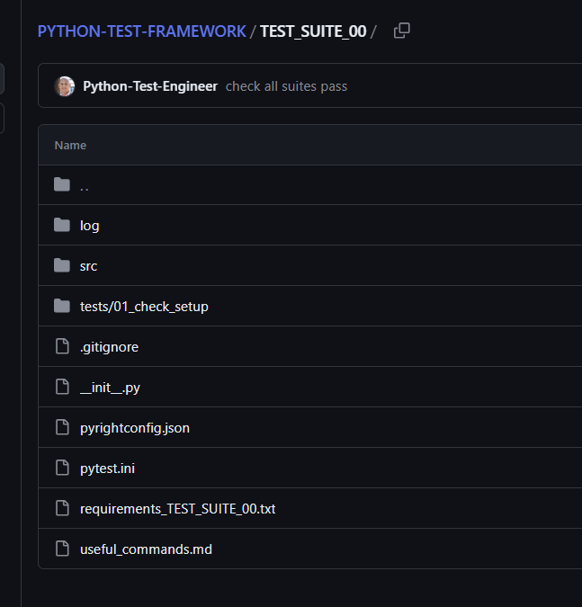

PyTest Basic¶
Set up¶
This uses TEST_SUITE_00 and is a simple wiring of src folder for your code and an tests folder for PyTest.

There is custom logging defined in pytest.ini that outputs to a log folder.
- move to
TEST_SUITE_00folder and
Sample layout¶
├── docs
│ ├── about.md
│ └── index.md
├── mkdocs.yml
└── site
├── 404.html
├── about
│ └── search_index.json
├── sitemap.xml
└── sitemap.xml.gz
Tests¶
pytest-sugar has been installed to provide prettier console output.